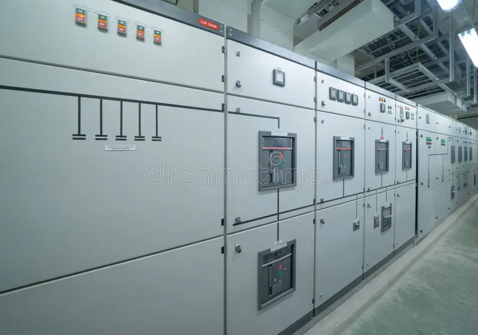
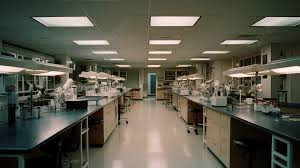

¿Cual es tu desición?

1-Buscar en la sala de energía: La sala de energía es el lugar más probable para encontrar el dispositivo de control.

2-Buscar en el laboratorio de alta seguridad: Algunos dispositivos importantes podrían estar guardados en el laboratorio de alta seguridad.